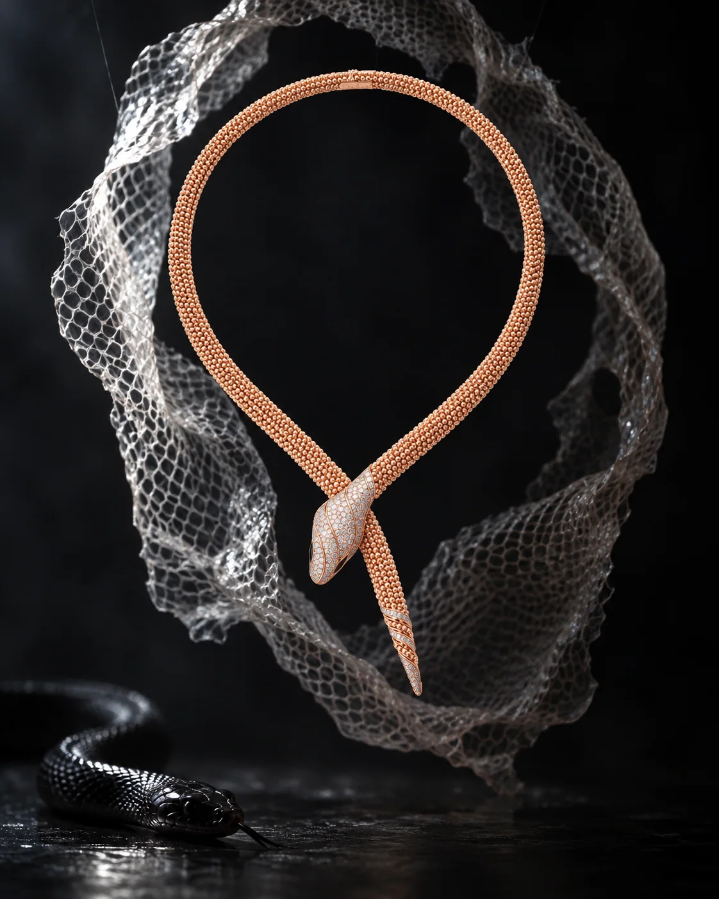
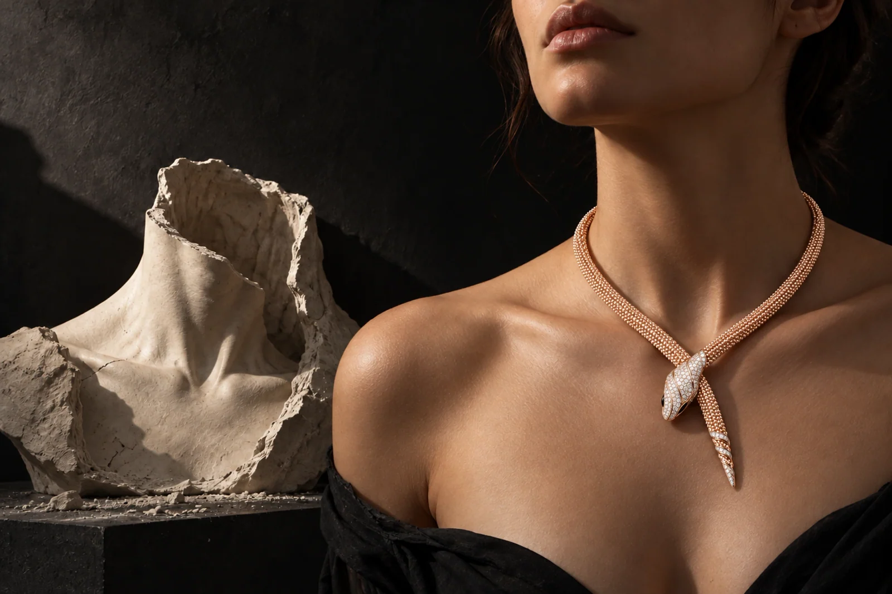

← All work
Jewellery · Unofficial brand study
BVLGARI / SERPENTI
A serpent leaves its skin. The crafted form remains.

The idea
The necklace, a shed skin and a living serpent present three states of one form: permanence, absence and life. The second image turns that same idea toward a wearer who has stepped away from a hollow cast of herself.
Making the world
Rose-gold warmth is isolated against graphite, translucent scale and chalk-white plaster. Both images are AI-assisted interpretations of the Serpenti necklace, not approved product photography; its exact stones and construction need product-team verification.
The series
